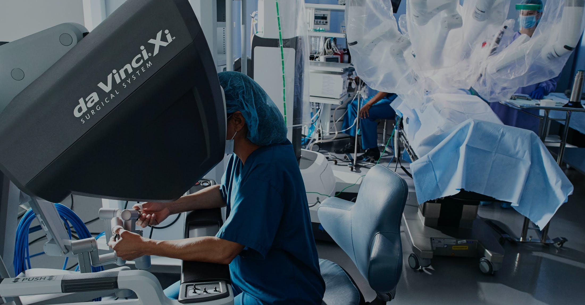
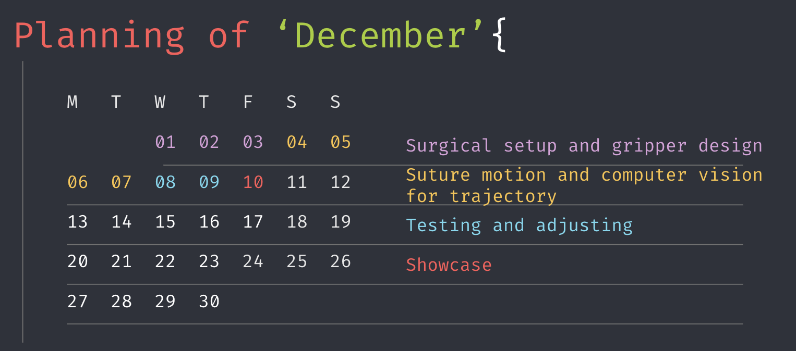

We aim to design a robot that executes automated suturing.

Motivation
The Da Vinci system, one of the famous Robotic Surgical Assistants (RSA), has revolutionized the field of minimally invasive surgeries by facilitating procedures that are aggressively demanding of a surgeon’s skill, effort, and energy. However, this system still requires humans to control the robot to execute the motion. Therefore, we are looking forward to automating the process of wound suturing by automatingthis process with Baxter.

Objectives
- Design a gripper that will hold the suture needle in reference to the Baxter's end effectors
- Design a scaled-up patient model that mimics flesh and blood as well as being able to be penetrated by the suturing needle
- Use computer vision and image segmentation to detect an open wound in real time, find points of interest for suturing, and to detect the closure of the wound
- Implement a path planner for Baxter to generate trajectories to pass the needle from arm to arm without getting tangled